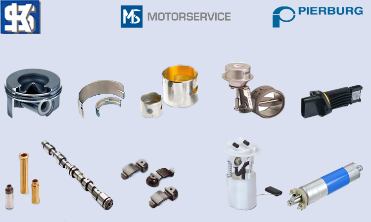

Kolbenschmidt
Kolbenschmidt razvija i proizvodi klipove za benzin i dizel motore za putnicka i teretna vozila. Jedan je od najistaknutijih igraca u ovom segmentu. Ostali proizvodi uključuju ventile, vođice ventila, karike, ležajeve radilica, bregaste osovine..
Smanjenje potrošnje goriva i emisija izduvnih gasova su godinama glavni pokretač razvoja novih vrsta klipova.
Već godinama, mnogi važni dileri originalnih delova su redovne mušterije Kolbenschmidt-a. Glavna tržišta su Evropa, Serverna i Južna Amerika, i Azija.
Pierburg
Pierburg, kao dobavljač prve klase, tradicionalno je jedan od najbližih partnera u autobomilskoj industriji. Osnovan je 1909. godine, kao trgovina čelika u Berlinu. 1928. godine počinje sa proizvodnjom karburatora i uskoro postaje jedini snabdevač svih nemačkih automobila i mnogih svetskih proizvođača motornih vozila i proizvođača motora. Pierburg razvija inovativne komponente i sistemska rešenja sa priznatim nadležnostima u oblasti dovoda vazduha i kontrole emisija. Svi ovi proizvodi, pumpe goriva, egr ventil, nepovratni ventil, protokomeri o vakuum pumpe, odgovaraju visokim zahtevima tržišta i standardima kvaliteta.
Kako u prošlosti tako i sad, Pierburg aktivno oblikuje budućnost automobila.
